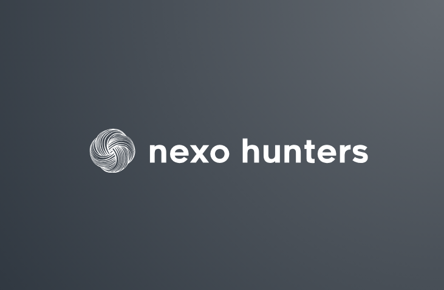

01
Recruiting process automation
We automate your recruiting processes, tailored to your team
We reduce day-to-day manual work and improve the experience for both candidates and Talent Acquisition teams.
ATS
CRM
Slack
Teams
Google Workspace
Microsoft 365
01 — Problems we solve
Where your team's time goes
02
Manual profile screening
03
Inconsistent candidate follow-up
04
Interview scheduling
05
Reports built by hand
06
Processes disconnected across tools
07
An out-of-date ATS or CRM
You don't need to change your stack. We design automations around the processes and tools your team already uses.
02 — What we automate
Automations designed around your process
Screening
Initial filtering of applications against the criteria your team defines.
Interview scheduling
Calendars, reminders and reschedules without the email chains.
Follow-up
Consistent follow-up at every stage, with clear owners and deadlines.
Shortlist generation
An ordered, comparable shortlist ready for your team's decision.
Reporting
Search status reports generated automatically.
Dashboards
A single view of the pipeline, updated from your process data.
Candidate communication
Timely replies and updates, in your organization's tone of voice.
Referral programs
Submission, tracking and traceability for internal referrals.
AI-assisted sourcing
On the sources your team already works with. We don't scrape LinkedIn.
Documentation review and consistency
Checking that process documentation is complete and consistent across systems.
03 — How we work
Diagnosis, design and implementation
Diagnosis
STEP 01
Understand the process before changing it
We survey the current process, the tools in use and where manual work piles up. We work with the TA team to map every stage exactly as it happens today.
Identifying opportunities
STEP 02
Prioritize what is worth automating
We rank the opportunities by impact and effort. Together with your team we decide what gets automated first, what waits, and what is better left as it is.
Solution design
STEP 03
Clear rules and control points
We define the flow, the criteria and the moments where a person reviews or approves. The solution is designed around your real process, not a generic model.
Implementation
STEP 04
On the tools you already use
We connect your ATS, your CRM and the team's communication tools, put the flow into production and support the rollout.
Optimization
STEP 05
Tune it with the process running
We measure how it performs, adjust criteria and add improvements incrementally. The process keeps evolving alongside your team.
04 — Integrations
We work with the tools your team already uses
- ATS
- CRM
- Google Workspace
- Microsoft 365
- Slack
- Teams
05 — Automation + human judgment
Technology handles the repetitive work
Critical decisions stay with your recruiting team. Every automation is designed with control points where a person reviews, approves or steps in.
AUTOMATED
- Data entry and clean-up
- Reminders and alerts
- Scheduling and reschedules
- Status reports
THE TEAM DECIDES
- Evaluation criteria
- Moving candidates forward
- The final shortlist
- Offer and close
06 — Who it's for
Teams with processes already up and running
In-house TA teams
Running several searches in parallel with limited resources.
Recruiting agencies
That need to standardize how they operate across clients and teams.
Growing startups
Building out their process and looking to avoid operational debt.
High-volume hiring
Where every manual task is multiplied by hundreds of candidates.
07 — The results we aim for
Less manual work
The team spends its time evaluating and talking to people, not copying data.
More traceability
Every stage is recorded, so you can tell where everything stands.
A better candidate experience
Timely replies and consistent communication throughout the process.
Centralized information
One point of reference instead of data scattered across spreadsheets.
08 — About Nexo Hunters

Nexo Hunters is a recruiting process automation consultancy for Talent Acquisition teams in Latin America. We work through diagnosis, design and implementation of tailored solutions on the tools each organization already uses. We don't sell a closed product: we start from each team's real process and automate what actually makes sense to automate.